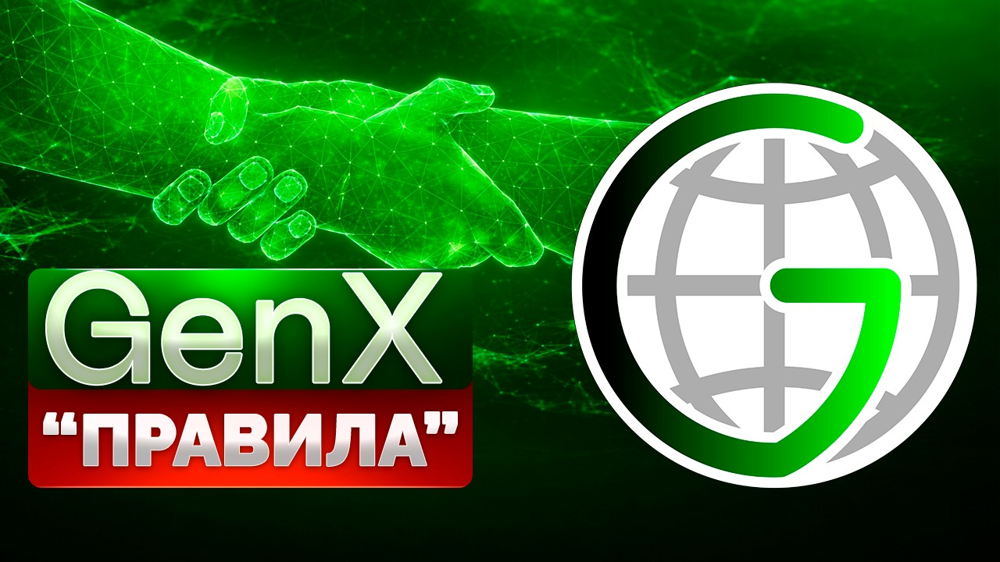

Регистрация в телеграм-боте
Воображение гораздо важнее знаний.
что мы сейчас знаем и понимаем,
включает в себя целый мир и все то,
что мы когда-либо поймем и узнаем.

ВНИМАНИЕ! Действуя в дальнейшем по этим моим рекомендациям, Вы подтверждаете, что уже ознакомились с ПРЕДУПРЕЖДЕНИЕМ и принимаете дальнейшее решение участвовать в здравом уме и трезвой памяти.
Прежде всего! Если Вы прочитали все эти «правила» и «ничего не поняли» — не комплексуйте. Всё новое всегда сперва выглядит непонятным. Понятно нам только то, что уже известно (всё привычное). Так уж мы устроены. :-))
Поэтому лучше сразу зайдите в телеграм-бот и убедитесь, что там всё интуитивно понятно. Если непонятно, – свяжитесь прямо там с консультантом техподдержки, – он Вам разобъяснит всё в лучшем виде и в ячейку к себе зарегистрирует. С радостью причём. Превеликой! Он же бонусные абстрактные GenX'ы будет за Вас получать. Так что Вы на вес золота. Вам и делать-то ничего не придётся. А там уже… по ходу пьесы… Вникните! Разберётесь. Никуда не денетесь! Удачи!!
Ах да! Одна вещь, которая обычно новеньких напрягает.
А если бот «упадёт», сломается, или Телеграм заблокируют?!..
Да, может и такое случиться. В жизни вообще всякое может быть. «Никогда не знаешь, где найдешь, где потеряешь». Однако база данных у нас не в Телеграм хранится, а в эксель-таблицах (в Телеграм только Ваши ники и Telegram-id). Которые распылены на ВСЕХ участников. Получается, у каждого участника есть кусочек базы данных – полная децентрализация! Об этом дальше подробнее будет. Главное, что абстрактные GenX'ы у Вас остались, они целы-целёхоньки, с ними ничего не случилось. Они ведь — виртуальные! Их и не существует вовсе! А что может случиться с тем, чего не существует? Так что всё это Вас не касается (если, например, в банке офис сгорит — это проблемы банка, не клиентов). А бота мы в любой момент можем поднять на другом имени и всё запустить. Да хоть даже без Телеграма, – на любом сайте сможем запустить! Как личные кабинеты. Поэтому ничего страшного. Вы просто Внимательно следите за сайтом GenXrobot.com и за ютуб-каналом https://www.youtube.com/@Dr.Usupov – все новости будут там, в случае чего.
То, что приведено далее, – это никакие не правила в привычном понимании этого слова. Правил, напоминаю, в GenX нет вообще. Единственное правило: никаких правил нет! А это всё просто мои советы. Моё мнение. Домыслы. Облечённые в некую художественную форму для большей выразительности, скажем так. Мне почему-то кажется, что, прислушиваясь к этому бреду сумасшедшего, участники Глобальной Системы Взаимопомощи GenX смогут «покупать/продавать» абстрактные GenX'ы c предполагаемыми темпами роста «курсов» от 20% в месяц! (Как разного рода финансовым экспертам и консультантам кажется, что следует покупать те или иные акции. Что они вырастут в цене и пр. и пр. Вот и мне тоже − лишь кажется).
Но я всего лишь Человек и могу и ошибаться. Помните об этом всегда. Напоминаю также, что в GenX все переводы происходят строго между участниками. В GenX нет единого счета, на который стекались бы все деньги. Нет никаких внешних поступлений от каких-либо инвестиций и пр. (Вы безвозмездно переводите свои деньги напрямую другому человеку).
В GenX одни люди оказывают другим людям посильную безвозмездную помощь в надежде через некоторое время получать такую же безвозмездную помощь от других людей предположительно в большем объеме. В любой момент Вы можете всё потерять! Перевели свои деньги другому Человеку − всё, они уже не Ваши! Вы уже лишились этих средств! Уже − потеряли! Вам могут ничего так и не перевести безо всяких на то причин и объяснений. Так что − «думайте сами, решайте сами». «Иметь или не иметь». И участвуйте некритичными для себя суммами.
🎯 Целью Глобальной Системы Взаимопомощи GenX является создание неформального сообщества людей по всему миру, которые помогают друг другу своими свободными деньгами исключительно на доверии. Без формальных договоров и бюрократии. «Народный банк», в котором деньги работают на людей, а не люди на деньги. Без посредников, без кредитов, без депозитов – без ростовщиков! Система, в которой люди за счет собственных средств обеспечивают друг другу базовый безусловный доход – уверенность в завтрашнем дне! Сегодня помог ты – завтра помогут тебе. GenX – Генерируем деньги доверием!
Суть кратко:
Заходите в телеграм-бота и автоматически попадаете в ячейку, «вступаете» в GenX! Далее оказываете безвозмездную помощь другим участникам, нажимая в боте соответствующие кнопки в меню, − так Вы, образно говоря, «покупаете» абстрактные GenX'ы и наблюдаете, как они предположительно растут в «цене» темпами от 20% в месяц.
20% в месяц это примерно в 9(!) раз за год. К слову сказать. Для тех, кто слаб в арифметике. (Предположительно, естественно!) Это значит, уже через четыре месяца Вы можете запросить вдвое больше помощи, чем оказали сами.
Хотите, образно говоря, «продать» свои абстрактные GenX'ы полностью или частично? (По новой, предположительно более высокой «цене»?)
Да без проблем! В любой момент и безо всяких ограничений!
Запрашивайте помощь в боте – образно говоря, «продавайте» на здоровье свои абстрактные GenX'ы. И Вам уже другие участники Глобальной Системы Взаимопомощи предположительно переведут свои деньги (точно так же, как Вы кому-то изначально перевели свои). Всё просто!
Что ещё? Реферальные Бонусы (ну, премии) в абстрактных GenX'ах будете получать за каждого приведённого Вами в Систему нового участника.
10% от его первого оказания помощи и по 5% от всех последующих («покупок» абстрактных GenX'ов Вашим рефералом). Неплохо, правда?
Теперь подробнее.
Все участники Глобальной Системы Взаимопомощи GenX условно делятся на ячейки.
Во главе ячейки стоит консультант. Консультанты – это точно такие же участники, просто более опытные и ответственные. В перспективе Вы тоже можете стать консультантом – только приветствуется! Будете дополнительно еще и бонусы Консультанта в абстрактных GenX'ах получать – 5% от всех оказаний помощи участниками Вашей ячейки.
Во главе всех стоит Управляющий. Главный консультант, не более того.
Хотите оказать помощь другим Участникам Системы? Образно говоря, «купить» абстрактные GenX'ы? Захóдите в телеграм-бота – и нажимаете в меню кнопку «Оказать помощь». Таким образом Вы сообщаете Системе о своем намерении оказать помощь другим участникам. Через некоторое время телеграм-бот присылает Вам запрос помощи от другого точно такого же участника с его реквизитами (который в настоящий момент уже запрашивает помощь, – образно говоря, «продает» свои GenX'ы с набежавшими процентами). Вы безвозмездно переводите свои деньги напрямую другому участнику на карту по его реквизитам (или крипту на его криптокошелек, если Вы не из России). Как только средства окажутся у другого участника на карте/криптокошельке и он подтвердит это в боте, − с этого момента Ваши абстрактные GenX'ы станут подтвержденными и предположительно начнут «расти» темпом от 20% в месяц.
Бот Вам будет присылать эксель-таблицу с Вашими абстрактными GenX'ами после каждой такой операции, – Ваша задача её скачивать и хранить как зеницу ока. Это часть базы данных, которая потребуется, если что-то случится с ботом. Мы будем стараться, чтобы до этого не дошло! :-))
Хотите сами запросить помощь? Образно говоря, «продать» свои абстрактные GenX'ы по более высокому «курсу»?
Снова захóдите в телеграм-бота и нажимаете в меню кнопку «Запросить помощь» − бот адресует Вашу просьбу о помощи напрямую другому участнику, который в настоящий момент хочет оказать помощь (как Вы когда-то её сами оказывали). И другой участник переводит Вам безвозмездно свои деньги. Эту операцию бот также фиксирует в эксель-таблице и присылает Вам. Вы её сохраняете.
Поскольку многие новички ведут себя нерасторопно – не привыкшие же, с ходу не понимают, что здесь нужно делать, – то иногда приходится подождать. Чисто человеческий фактор. Но ради таких процентов можно ведь и подождать, согласны? Даже если новичок просто игрался в боте и не собирается Вам отправлять деньги, то вскоре бот переадресует Вашу просьбу о помощи другому участнику. А от того, кто не сделал Вам перевод, бот больше не будет принимать заявки на оказание помощи, пока он не обратится к консультанту техподдержки, чтобы объясниться. Если и после этого участник ничего не отправит, – он будет заблокирован Системой с пометкой «вредитель».
Как видите, всё просто, ясно и понятно. Бот в автоматическом режиме по определённому математическому алгоритму стыкует участников между собой и ведёт учёт Ваших абстрактных GenX'ов в эксель-таблицах, которые рассылает участникам после каждой операции (после каждого изменения). А консультанты помогают новым участникам разобраться в устройстве Системы и участвуют в разрешении спорных ситуаций: например, если участник-отправитель нажал в боте кнопку, что отправил средства, а на самом деле не отправил, или если участник-получатель средства получил, а в боте этого не подтверждает. Консультанты также наблюдают за процессом, выявляя вредителей и злоумышленников. Поскольку это весьма кропотливая работа, − за неё они получают «бонусы консультанта» в абстрактных GenX'ах от оказаний помощи участниками своей ячейки. Эти бонусные абстрактные GenX'ы заморожены на 30 дней, – если участник запрашивает помощь раньше, то они сгорают. Сделано это для того, чтобы одни и те же деньги туда-сюда не гоняли .:-))
Приведу пример. Скажем, оказали Вы помощь на $100.
Так, по «курсу» это получилось, предположим, 10 абстрактных GenX-20% (плюс разные бонусные абстрактные GenX'ы, о них подробнее будет дальше, поэтому их пока в расчет не берем).
Значит, у Вас теперь 10 абстрактных GenX-20%.
По мере того, как «курс» их предположительно растёт, Вы можете запрашивать помощь и, образно говоря, «продавать» их хоть все сразу, хоть по частям. В любой момент! Безвозмездно получая за них реальные деньги на свой банковский счет/криптокошелек напрямую от других участников. Можете потом опять сами безвозмездную помощь оказать и, образно говоря, «прикупить» абстрактных GenX'ов! Ну, словом, всё, как с обычной валютой. Ничего хитрого. Прошел месяц − «продали» их по новому «курсу» и получили уже предположительно $120.
Представьте Систему GenX как виртуальную общую тумбочку. В которую все постоянно складывают свои свободные средства и из которой потом берут их по необходимости предположительно в большем объеме.
«Положили» $100. Спустя время захотите «забрать» $150? Запрашиваете помощь − другие участники сами же Вам и переводят напрямую! Таким же образом, как и Вы в своё время помогли своими средствами другим участникам.
Да, на всех в тумбочке в один момент времени средств не хватит, но этого и не нужно, чтоб на всех в любой момент хватало. Почитайте небольшую публикацию на этот счет: https://teletype.media/@genxadmin/social
Вполне достаточно, чтоб ежедневно здесь была всего лишь та сумма, которую ежедневно и запрашивают. А это вполне достижимо (ведь всё время и новые деньги подносят – старые и новые участники выражают намерение оказать помощь). На всех потребуется, только если ВСЕ СРАЗУ и забрать захотят (ну, или почти все :-)).
Однако на практике такого ведь не бывает никогда. Только в случае паники. (Например, если все сразу к выходу в кинотеатре бросятся, тоже ведь давка начнется. Как и в банке, − если все сразу захотят свои вклады забрать, то на всех не хватит. Да Вы и сами всё это прекрасно понимаете. Паника губительна для любой структуры!).
Мораль проста: не паникуйте! Ведите себя спокойно и разумно, и всё будет тип-топ! Всё здесь, впрочем, как и везде, зависит исключительно от поведения участников. От Вашего поведения. От Вашей сознательности и разумности. А потому, если Вы и решили поучаствовать, безвозмездную помощь людям оказать, то участвуйте средствами для Вас некритичными, − теми суммами, расставшись с которыми, Вы не будете дёргаться и других нервировать. Как говорится: поступай с другими так, как хочешь, чтобы поступали с тобой. Словом, не жадничайте! Всех денег не заработать. В этом случае Наша общая тумбочка − Наш Глобальная Система Взаимопомощи GenX − будет просто непотопляема! Всё в Наших руках.
🌐 GenX – Генерируем деньги доверием!